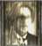

| 水無月流歌 | | みなづき るか Ruka Minazuki | CV: 能登麻美子 | | 本遊戲的主角。十七歲。原名四方月流歌，過去曾入住朧月館，為當初失蹤的五名少女之一。曾經是隴月島的島民，後來因家庭紏紛隨母離開朧月島，離開時失去以前的記憶以及忘記父親的面貌，現在得知海咲和圓香前往朧月島，為尋找以前失去的記憶，追著友人隻身前往朧月島。 |
| 麻生海咲 | | あそう みさき Misaki Asou | CV: 沢城みゆき | | 當初失蹤的五名少女之一。意志堅強的少女，麻生博士的子孫。天生具靈媒體質，在神隱事件後失去記憶，後來在鏡子中被跟自己一模一樣的黑衣少女引導。現在和圓香一起前往朧月島，進館不久後和圓香失散。偶然間黑衣少女出現在眼前，似乎一直引誘海咲到某個地方。 |
| 月森圓香 | | つきもり まどか Madoka Tsukimori | CV: 後藤沙緒里 | | 當初失蹤的五名少女之一。曾入住朧月館，喜愛畫畫，個性軟弱的她經常被亞夜子欺負，被亞夜子稱為內在顏色漂亮的玩具。非常注重海咲，希望海咲別想起過去的記憶。為解開好友離奇死亡之謎而隨海咲前往朧月島。進館不久後跟海咲失散，獨自行動的她卻遇到不幸的遭遇。 |
| 霧島長四郎 | | きりしま ちょうしろう Choushiro Kirishima | CV: 小西克幸 | | 現役偵探，曾負責朧月島失蹤事件的刑警。為追查連續殺人通緝嫌疑犯灰原耀而抵達朧月島，也是十年前在醫院地下找到失蹤少女的人。儀式失敗後兩年，霧島曾追捕灰原耀至灰原醫院屋頂…。單戀小夜歌，當小夜歌得知流歌前往朧月島後，受她的委託去協助流歌。 |
| 奈々村十萌 | | ななむら ともえ Tomoe Nanamura | | | 當初失蹤的五名少女之一。並沒有入住朧月館。被灰原耀誘拐後擔任歸來迎的奏，歸來迎失敗後自此失去記憶。在片桐省二的告密下被霧島救出。十年後在病房裏掩着臉哭叫，悲慘的死去。 |
| 篠宮鞠絵 | | しのみや まりえ Marie Shinomiya | | | 當初失蹤的五名少女之一。跟流歌、海咲、圓香不一樣，並沒有入住朧月館。被誘拐成為歸來迎的奏，歸來迎失敗後自此失去記憶。被救出十年後跟十萌同期死在自己家裡。死狀跟八年前被發現的朧月島民相似。 |
| 灰原朔夜 | | はいばら さくや Sakuya Haibara | CV: 田中理恵 | | 灰原重人的女兒，灰原耀的姐姐，亞夜子的母親 (?)。與弟弟灰原耀有不倫之戀，具靈媒體質，和小時候的海咲感情很好。患有月幽病的朔夜把人偶當作自己，不停地對人偶說話來維持自我。因歸來迎而導致月幽病併發的她本來沉睡在忌之宮，兩年後因為一場小月蝕而醒來。 |
| 灰原耀 | | はいばら よう You Haibara | CV: 櫻井孝宏 | | 灰原重人的兒子，灰原朔夜的弟弟。在東京開設灰原醫院。對姐姐朔夜抱有親情以上的感情，擔心著她的病，犯罪紀錄都是為找到治療她的方法線索。誘拐五位少女堅持進行禁忌的儀式「歸來迎」。儀式失敗後，一直等待姐姐甦醒過來，並打算帶著朔夜和亞夜子離開朧月島。 |
| 灰原重人 | | はいばら しげと Shigeto Haibara | | | 朧月島之村長以及朧月館與灰原病院的院長，主持朧月神樂祭典。女兒朔夜月幽病併發，而妻子也受到自己靈媒體質困擾而自殺，從此致力研究月幽病的治療方法。一直使用其他月幽患者進行人體實驗的研究。 |
| 亞夜子 | | あやこ Ayako Haibara | | | 文件暗示為灰原耀和灰原朔夜所生的女兒。12 歲入院，因為月幽病的關系而造成精神分裂，個性殘暴，喜歡鮮血淋漓和臨死前的叫聲。圓香的金絲雀曾被亞夜子用剪刀剪斷頭。很喜歡欺負圓香和護士，稱圓香為內在顏色漂亮的玩具。因為海咲經常干擾她“玩玩具”而懷恨於心。 |
| 四方月宗也 | | よもつき そうや Souya Yomotsuki | CV: 立木文彦 | | 流歌之父。被先祖宗悅的執念所纏繞，闖入精神的深處使之完成月蝕之面。受灰原重人之託製作月蝕之面，一直鑽研著製作面具的技術想製作出究極之面具使宗悅時代失傳的技術復活。最後無苦之日時坐在月蝕之面誕生的場所，懷抱著釀成災禍的自責念頭，等待著朔夜的來臨。 |
| 水無月小夜歌 | | みなづき さやか Sayaka Minazuki | | 整理中。
整理中。
整理中。
整理中。 |
| 海夜 ( 黑衣的少女 ) | | みや Miya | | | 灰原朔夜為了保護自己的記憶，不停地對人偶說話，把人偶當作自己以提醒自己是誰。後來她把人偶送給海咲並教她保有記憶的方法。人偶原名朔夜，送給海咲後理應改叫海咲，不過海咲視朔夜為重要的人，希望把朔夜的記憶一同保留，故取了兩人名字中各一字，名為海夜。 |
|  | 麻生邦彥 | | あそう くにひこ Kunihiko Aso | | | 江戶至明治初期的科學家，發明可以拍攝異界的射影機。由於進行靈界相關的研究，被學會視為異端。以響石耳飾發明靈石收音機，後來把試作型射影機和靈石收音機借給朋友真壁清次郎到皆神村拍攝紅贅祭。曾到朧月館作客，發現面具工匠所用的塗料能進一步改良射影機。接著持續在各地調查，最後在冰室邸研究將靈體完全封印的方法時身亡。 |
|